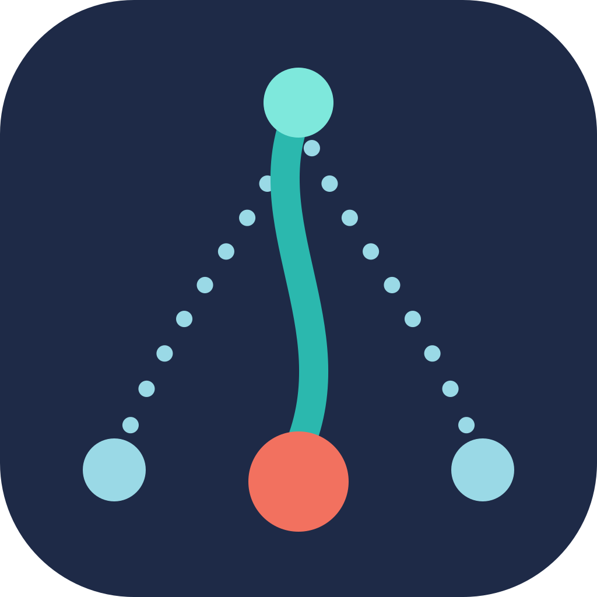

Master-JEV Hook · mocks do dashboard
Quatro direções com a identidade KeepGlide. Cada uma troca de tema pelo botão no topo.
- A
Navy flight
Tela navy como o ícone da empresa, dados em Teal, linhas Sky, espaço generoso.
escuro por padrão - B
Daylight
Cartões brancos sobre plano Sky, marca grande no topo, painel de pesos logo abaixo dos números.
claro por padrão - C
Glide board
Painel bento em 12 colunas, pesos e limiares como destaque, fundo com campo de pontos Sky.
claro por padrão - D
Instrument panel
Telemetria densa para segunda tela: números monoespaçados, linha do tempo de 24 h, limiares em arcos.
escuro por padrão
Dados de exemplo em sample-data.json; contrato em SPEC.md. O dashboard é só informativo: nenhum controle muda o gateway.